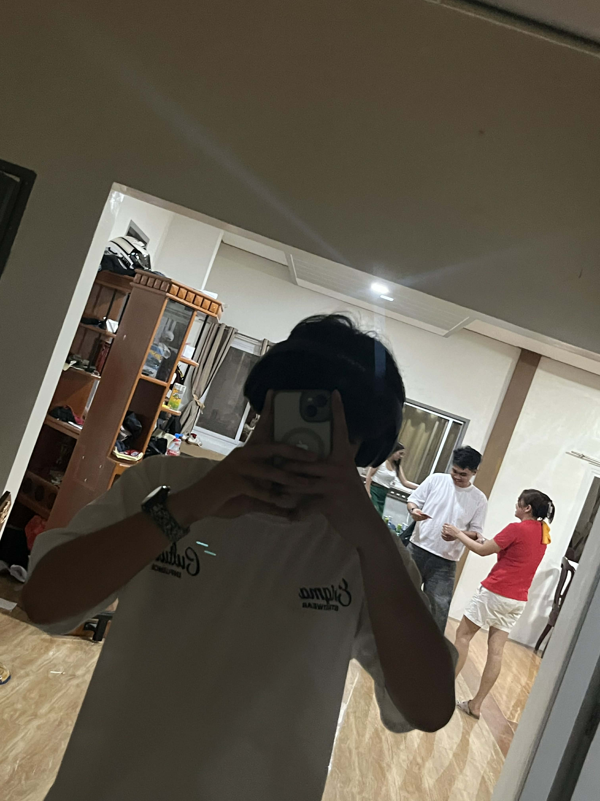

Owner of ARKHIEL Scents
Hi, I'm Nathaniel, the owner of ARKHIEL Scents. I'm passionate about creating unique and luxurious fragrances that reflect individuality and confidence.
About ARKHIEL Scents
ARKHIEL Scents is a fragrance brand that celebrates the power of identity, confidence, and self-expression through the art of luxury perfumery. Every scent we create is carefully designed to tell a story your story. We believe that fragrance is more than just an accessory; it is an invisible signature that defines your presence, enhances your mood, and leaves a lasting impression wherever you go.
Our mission is to craft high-quality perfumes that embody elegance, individuality, and sophistication. Each bottle is a blend of carefully selected notes, balanced to evoke emotion, awaken memories, and highlight the uniqueness of the person who wears it. Whether you seek something bold and captivating, soft and romantic, or fresh and empowering, ARKHIEL Scents offers a fragrance that resonates with your personality.
We are dedicated to using premium ingredients and thoughtful craftsmanship to ensure that every spritz delivers a long-lasting and memorable experience. Our passion lies in helping you feel confident, empowered, and authentic in your daily life. At ARKHIEL Scents, fragrance becomes a form of self-discovery a way to express who you are without saying a single word.
More than just a brand, ARKHIEL Scents is a symbol of identity, luxury, and confidence. We invite you to explore our collection and find the scent that speaks to you, defines you, and becomes a part of your personal journey.